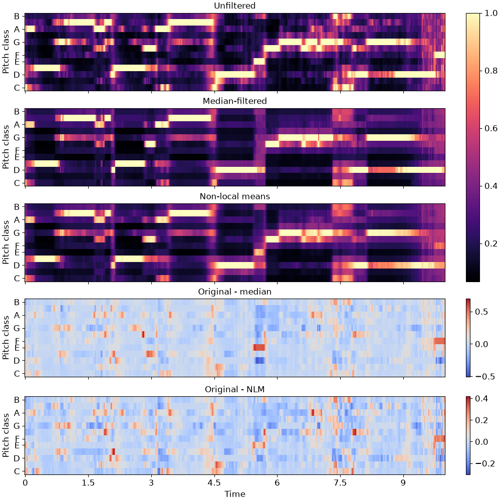

librosa.decompose.nn_filter
- librosa.decompose.nn_filter(S, *, rec=None, aggregate=None, axis=-1, **kwargs)[source]
Filter by nearest-neighbor aggregation.
Each data point (e.g, spectrogram column) is replaced by aggregating its nearest neighbors in feature space.
This can be useful for de-noising a spectrogram or feature matrix.
The non-local means method [1] can be recovered by providing a weighted recurrence matrix as input and specifying
aggregate=np.average.Similarly, setting
aggregate=np.medianproduces sparse de-noising as in REPET-SIM [2].- Parameters:
- Snp.ndarray
The input data (spectrogram) to filter. Multi-channel is supported.
- rec(optional) scipy.sparse.spmatrix or np.ndarray
Optionally, a pre-computed nearest-neighbor matrix as provided by
librosa.segment.recurrence_matrix- aggregatefunction
aggregation function (default:
np.mean)If
aggregate=np.average, then a weighted average is computed according to the (per-row) weights inrec.For all other aggregation functions, all neighbors are treated equally.
- axisint
The axis along which to filter (by default, columns)
- **kwargs
Additional keyword arguments provided to
librosa.segment.recurrence_matrixifrecis not provided
- Returns:
- S_filterednp.ndarray
The filtered data, with shape equivalent to the input
S.
- Raises:
- ParameterError
if
recis provided and its shape is incompatible withS.
Notes
This function caches at level 30.
Examples
De-noise a chromagram by non-local median filtering. By default this would use euclidean distance to select neighbors, but this can be overridden directly by setting the
metricparameter.>>> y, sr = librosa.load(librosa.ex('brahms'), ... offset=30, duration=10) >>> chroma = librosa.feature.chroma_cqt(y=y, sr=sr) >>> chroma_med = librosa.decompose.nn_filter(chroma, ... aggregate=np.median, ... metric='cosine')
To use non-local means, provide an affinity matrix and
aggregate=np.average.>>> rec = librosa.segment.recurrence_matrix(chroma, mode='affinity', ... metric='cosine', sparse=True) >>> chroma_nlm = librosa.decompose.nn_filter(chroma, rec=rec, ... aggregate=np.average)
>>> import matplotlib.pyplot as plt >>> fig, ax = plt.subplots(nrows=5, sharex=True, sharey=True, figsize=(10, 10)) >>> librosa.display.specshow(chroma, y_axis='chroma', x_axis='time', ax=ax[0]) >>> ax[0].set(title='Unfiltered') >>> ax[0].label_outer() >>> librosa.display.specshow(chroma_med, y_axis='chroma', x_axis='time', ax=ax[1]) >>> ax[1].set(title='Median-filtered') >>> ax[1].label_outer() >>> imgc = librosa.display.specshow(chroma_nlm, y_axis='chroma', x_axis='time', ax=ax[2]) >>> ax[2].set(title='Non-local means') >>> ax[2].label_outer() >>> imgr1 = librosa.display.specshow(chroma - chroma_med, ... y_axis='chroma', x_axis='time', ax=ax[3]) >>> ax[3].set(title='Original - median') >>> ax[3].label_outer() >>> imgr2 = librosa.display.specshow(chroma - chroma_nlm, ... y_axis='chroma', x_axis='time', ax=ax[4]) >>> ax[4].label_outer() >>> ax[4].set(title='Original - NLM') >>> fig.colorbar(imgc, ax=ax[:3]) >>> fig.colorbar(imgr1, ax=[ax[3]]) >>> fig.colorbar(imgr2, ax=[ax[4]])
